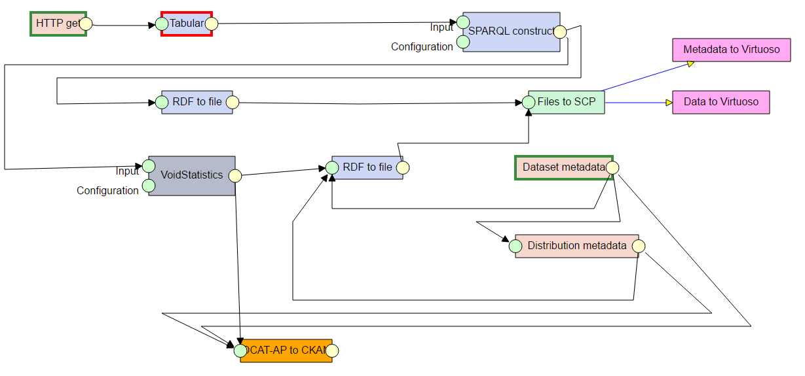
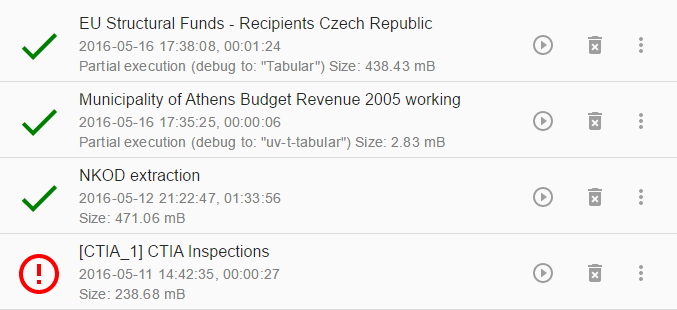
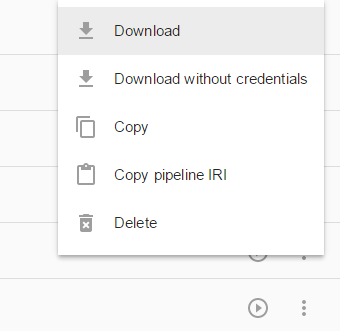
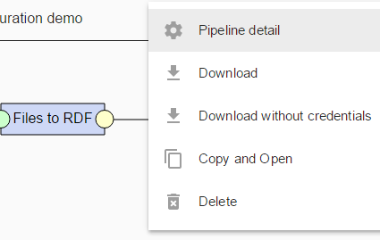
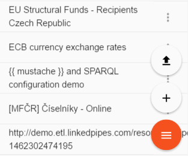
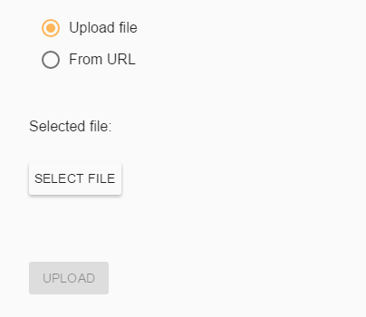
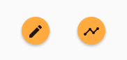
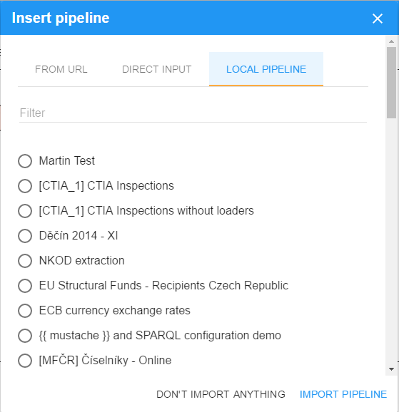
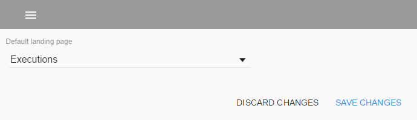

Overview
Once you have LinkedPipes ETL installed and running, it is time to explore. Of course, there is not much to see in an empty instance, but let us go through the basics. The image below is what we call a Pipeline. It is a defined data transformation process which consists of interconnected components. You can add a component to a pipeline by clicking in an empty space and selecting the desired component from the list, or by dragging and edge to an empty space. Each component has a name, green input ports and yellow output ports. The ports represent Data Units, which can contain either RDF data or regular files, according to their type. Ports are connected by edges, which indicate the flow of data. Only ports representing Data Units of the same type can be connected. In addition, component configuration can be shared among pipelines using component templates. 
Pipelines
Pipelines, defined data transformation processes consisting of interconnected components, are one of the key concepts in LinkedPipes ETL.
 So far, you can name them, display them, edit them and run them.
Once you run a Pipeline, you create its Execution.
So far, you can name them, display them, edit them and run them.
Once you run a Pipeline, you create its Execution.
Executions
An Execution is one run of a Pipeline. It can either succeed or fail. On the Executions page, you can see the currently running executions with their progress as well as finished executions.  You can see the start and end time of an Execution as and the amount of disk space it takes up. You can free that disk space by using the trash icon. You can also re-run the execution or edit its Pipeline, which is useful for debugging.
Pipeline development workflow
We have imporved the way a pipeline can be designed, which will save you time and frustration with our component list.
Component compatibility

The first component is placed the usual way, just click anywhere on the pipeline and a component list will show up. From the second component on, it gets interesting. Place the next component by dragging and edge from an existing one.
The list of components you see is limited only to those actually compatible with the output of the current component. For HTTP Get, you get only those components that can consume files, for components that produce RDF, only those able to consume RDF are offered.
Component tags
In addition, we tagged the components so that you can find them not only by their name, which sometimes you would have to guess, but also by what they do and by the formats they process.
Let's say you want to unzip a file.
For that, we have the Decompress archive component.
However, it may be hard to find under that name.
Now, you can find it by typing zip.

Recommended by your usage
As you create more and more pipelines, you will notice that the ordering of the offered components adjusts to your typical pipeline shape. This is because we now recommend the components ordered by their probability of appearance, based on the other pipelines in the LP-ETL instance. For example, when you process lots of tabular data, your typical pipeline will begin with an HTTP get followed by the Tabular component. If that is the case, then the Tabular component will be typically listed first, when you drag an edge from the HTTP get component.
Debugging support
When you execute a pipeline, you can watch it execute in the graphical overview. When a pipeline fails, you can simply fix what was wrong and resume from the point of failure. And when you are developing your query and need to rerun it over an over again until it is perfect, you can do that too.
Resume failed pipeline execution

When your execution fails, you can see that in the execution list. When you click on the execution, the graphical execution overview opens, where you can see what went wrong. By clicking on a data unit (circle on a component) you can browse its contents. By clicking on a component, you can see details about its execution. Now you need to switch to edit mode, fix the component that failed and click on "execute" to resume the execution of the pipeline.
Graphical execution overview

Component state type

The component with red border is the failed one. It needs to be fixed in order for the pipeline to continue.

Components with teal border have ran in previous executions, not the current one. These components will not run when the pipeline is resumed.

Components with green border have ran in the current execution. These components will not run when the pipeline is resumed.

Components with grey border are invalidated by a change in the pipeline. This can be caused by a change in configuration or connection of a component preceding the invalidated component in the execution. A component can also be invalidated manually by the loop control. These components will run again when the pipeline is resumed.
Component debug controls

When a component is clicked in the pipeline, its controls show up. The autorenew control invalidates the old and fresh components and all components following it in the execution order. The keyboard_tab control runs the pipeline up to that component and then stops. The power_settings_new control disables the component. A disabled component behaves as if it is not in the pipeline when a pipeline is executed. However, it keeps all the configuration and can be enabled again at any time. This is useful for debugging queries and configurations of a single component.
Execution detail
Once an Execution is finished, you may want to inspect it in more detail. One way is browsing the intermediary data passed in the pipeline in the graphical overview. Another way is by clicking on Execution detail in the more_vert menu. There, you can inspect messages from the execution in the form of a list.
In the Execution detail view, you can see a list of data units attached to executed components. The individual data units are named to reflect their expected content. You can open a data unit and see the files inside via FTP. Soon, we will add the option to directly query RDF data units using SPARQL.

Sharing options
Pipelines can be shared among colleagues and LP-ETL instances easily. They can be downloaded from one instance, shared as files on the web and finally imported to another instance either as a whole pipeline or as a pipeline fragment.
Pipeline download
You can download a pipeline as a JSON-LD file from the pipeline list by clicking on the more_vert menu. There, you can select either Download or Download wihtout credentials, which removes all potentially sensitive information such as user names, passwords, host names and ports from the downloaded pipeline, so that it can be shared safely. In addition, you can copy the selected pipeline IRI to the clipboard and send the link to someone who can use it do import the pipeline to his LP-ETL instance without the need to download and upload the pipeline files.


The same options for downloading a pipeline are also available from the pipeline editor, again in the more_vert menu. The pipeline IRI is available in the pipeline detail dialog.
Pipeline import
Once you get a link to a pipeline or the pipeline itself in the form of a JSON-LD file, you can import it in an LP-ETL instance either as a whole new pipeline, or as a pipeline fragment into an existing pipeline. To import the pipeline as a new pipeline, click on the menu menu and select the file_upload item.


In the pipeline import dialog, you can either upload the pipeline in a JSON-LD file, or provide a URL of an existing pipeline, which can be both uploaded somewhere on the web, or it can be the pipeline IRI from another LP-ETL instance.
Pipeline fragments
A more interesting use case for pipeline sharing is to provide a reusable piece of a pipeline to be used in other pipelines. This is what we call pipeline fragments and you can see them as sample pipelines in documentation of some of our components, such as SPARQL construct. In fact, any pipeline can be imported into another existing pipeline as a pipeline fragment. To import a pipeline fragment, click in the pipeline editor as if adding a new component and select the timeline icon.


In the pipeline fragment import dialog, there are several options of providing the fragment. The first two are the same as for pipeline import. You can provide a URL of a pipeline in an LP-ETL instance or on the web, you can upload a pipeline in a JSON-LD file. In addition, you can import a local pipeline from the local LP-ETL instance as a pipeline fragment into another pipeline. The list of pipelines in the Local pipeline tab can be filtered by the pipeline name.
Personalization
At the moment, we have one option for personalization which can be set in the Personalization page. You can choose whether you will start at the Pipeline list screen or the Executions list screen when you come to your LP-ETL instance. This setting is stored as a cookie in your web browser.
